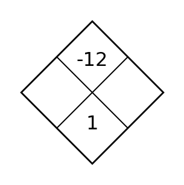
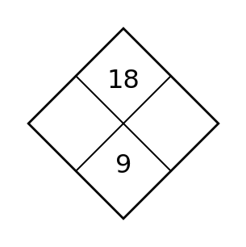
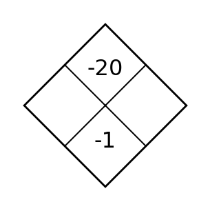

1
Complete the Diamond. The top is the product and the bottom is the sum.

Complete the Diamond. The top is the product and the bottom is the sum.
Graph $y=-x+4$ and identify its $y$-intercept.
Graph $y=3x+1$ and identify its $y$-intercept.
Graph $y=1/2x-2$ and identify its $y$-intercept.
Solve by elimination. $\begin{cases}2x+2y=-2\\-2x+y=-7\end{cases}$
Classify the system and justify. $\begin{cases}x-2y=3\\3x-6y=9\end{cases}$
Graph $y=2x-3$ and identify its $y$-intercept.
The table is one representation of a relationship. Write an equation that represents the same relationship.
| x | y |
|---|---|
| 0 | -2 |
| 1 | 1 |
| 2 | 4 |
Solve by elimination. $\begin{cases}3x-y=4\\-3x+3y=0\end{cases}$
Graph $y=2x-5$ and identify its $y$-intercept.
The table is one representation of a relationship. Write an equation that represents the same relationship.
| x | y |
|---|---|
| 0 | 4 |
| 1 | 3 |
| 2 | 2 |
The table is one representation of a relationship. Write an equation that represents the same relationship.
| x | y |
|---|---|
| 0 | 2 |
| 1 | 0 |
| 2 | -2 |
Complete the Diamond. The top is the product and the bottom is the sum.

Write a linear equation for the table.
| x | y |
|---|---|
| 0 | -3 |
| 1 | -4 |
| 2 | -5 |
Write a linear equation for the table.
| x | y |
|---|---|
| 0 | 4 |
| 1 | 7 |
| 2 | 10 |
Write a linear equation for the table.
| x | y |
|---|---|
| 0 | 2 |
| 1 | 5/2 |
| 2 | 3 |
Solve the system by substitution. $\begin{cases}y=2x+9\\2x+y=-3\end{cases}$
Solve the system by substitution. $\begin{cases}y=3x+16\\3x+y=-8\end{cases}$
Write a linear equation for the table.
| x | y |
|---|---|
| 0 | 1 |
| 1 | 3 |
| 2 | 5 |
Rewrite $4(x+3)+7$ in an equivalent expanded form.
For the system $y=3x-9$ and $4x+y=19$, identify the most efficient first substitution step before solving.
Write a linear equation for the table.
| x | y |
|---|---|
| 0 | -1 |
| 1 | 0 |
| 2 | 1 |
Rewrite $3(x+3)-2$ in an equivalent expanded form.
Rewrite $6(x+5)-5$ in an equivalent expanded form.
Complete the Diamond. The top is the product and the bottom is the sum.

A water tank begins with 12 liters and fills at 5 liters per minute. Write a linear model for the amount $A$ after $t$ minutes and interpret the rate.
A water tank begins with 5 liters and fills at 2 liters per minute. Write a linear model for the amount $A$ after $t$ minutes and interpret the rate.
A water tank begins with 10 liters and fills at 4 liters per minute. Write a linear model for the amount $A$ after $t$ minutes and interpret the rate.
A group sells premium seats for 16 dollars each and standard seats for 10 dollars each. They sell 21 items for 258 dollars. Define variables and write a system that models the situation.
Using $x$ for team shirts and $y$ for caps, solve $x+y=16$ and $14x+6y=184$. Interpret both coordinates in context.
A water tank begins with 8 liters and fills at 3 liters per minute. Write a linear model for the amount $A$ after $t$ minutes and interpret the rate.
A club pays a fixed fee of 6 dollars plus 5 dollars per participant. The total is 41 dollars. Write and solve an equation for the number of participants.
Using $x$ for adult tickets and $y$ for student tickets, solve $x+y=13$ and $9x+6y=102$. Interpret both coordinates in context.
A water tank begins with 12 liters and fills at 6 liters per minute. Write a linear model for the amount $A$ after $t$ minutes and interpret the rate.
A club pays a fixed fee of 8 dollars plus 4 dollars per participant. The total is 32 dollars. Write and solve an equation for the number of participants.
A club pays a fixed fee of 7 dollars plus 7 dollars per participant. The total is 35 dollars. Write and solve an equation for the number of participants.
Complete the Diamond. The top is the product and the bottom is the sum.

A line falls 3 units when $x$ increases 2 units. Determine its slope.
A line rises 1 unit when $x$ increases 3 units. Determine its slope.
A line rises 4 units when $x$ increases 2 units. Determine its slope.
Write an inequality represented by the shaded graph. Include the correct inequality symbol.

For $y \gt -x-5$, state whether the boundary is solid or dashed and which side of the line is shaded.
A line rises 2 units when $x$ increases 1 unit. Determine its slope.
Classify the relationship as linear or exponential and cite evidence from the table.
| x | y |
|---|---|
| 0 | 2 |
| 1 | 4 |
| 2 | 8 |
| 3 | 16 |
Use the test-point table to decide whether $(3,-3)$ belongs in the solution region for $y \ge -x-1$.
| Test point | Left side y | Boundary value | Satisfies? |
|---|---|---|---|
| (3,-3) | -3 | -4 | Yes |
A line rises 2 units when $x$ increases 4 units. Determine its slope.
Classify the relationship as linear or exponential and cite evidence from the table.
| x | y |
|---|---|
| 0 | 1 |
| 1 | 2 |
| 2 | 4 |
| 3 | 8 |
Classify the relationship as linear or exponential and cite evidence from the table.
| x | y |
|---|---|
| 0 | 1 |
| 1 | 4 |
| 2 | 7 |
| 3 | 10 |
Complete the Diamond. The top is the product and the bottom is the sum.

Compare the two linear relationships in the table. Which has the greater rate of change, and where do their outputs match?
| x | A | B |
|---|---|---|
| 0 | 1 | 4 |
| 1 | 3 | 5 |
| 2 | 5 | 6 |
| 3 | 7 | 7 |
Compare the two linear relationships in the table. Which has the greater rate of change, and where do their outputs match?
| x | A | B |
|---|---|---|
| 0 | 2 | 8 |
| 1 | 5 | 7 |
| 2 | 8 | 6 |
| 3 | 11 | 5 |
Compare the two linear relationships in the table. Which has the greater rate of change, and where do their outputs match?
| x | A | B |
|---|---|---|
| 0 | -1 | 5 |
| 1 | 1 | 4 |
| 2 | 3 | 3 |
| 3 | 5 | 2 |
Use the graph to describe the feasible region of the system. Give one point that appears feasible.

Determine whether $(4,16)$ is feasible for $y\le x+10$ and $y\ge -x+1$. Show both checks.
Compare the two linear relationships in the table. Which has the greater rate of change, and where do their outputs match?
| x | A | B |
|---|---|---|
| 1 | 5 | 11 |
| 2 | 8 | 11 |
| 3 | 11 | 11 |
| 4 | 14 | 11 |
A rule assigns each input exactly one output. Explain why this condition matters when deciding whether a relationship is a function.
Use the table to identify points that satisfy both $y\le x+9$ and $y\ge -x+2$.
| Point | Constraint 1 | Constraint 2 | Feasible |
|---|---|---|---|
| (0,0) | Yes | No | No |
| (2,3) | Yes | Yes | Yes |
| (4,14) | No | Yes | No |
Compare the two linear relationships in the table. Which has the greater rate of change, and where do their outputs match?
| x | A | B |
|---|---|---|
| 0 | -3 | 7 |
| 1 | 1 | 6 |
| 2 | 5 | 5 |
| 3 | 9 | 4 |
A relation pairs input $3$ with output $5$ and also pairs the same input $3$ with output $8$. Explain whether the relation can be a function and why.
A relation contains $(1,4)$, $(2,6)$, $(1,7)$, and $(3,8)$. Is it a function? Explain using the input-output rule.